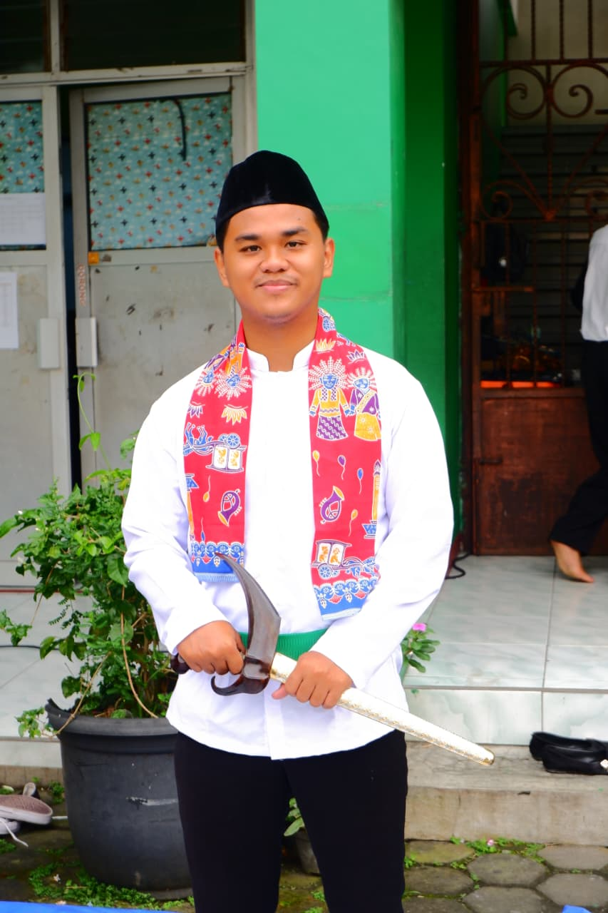
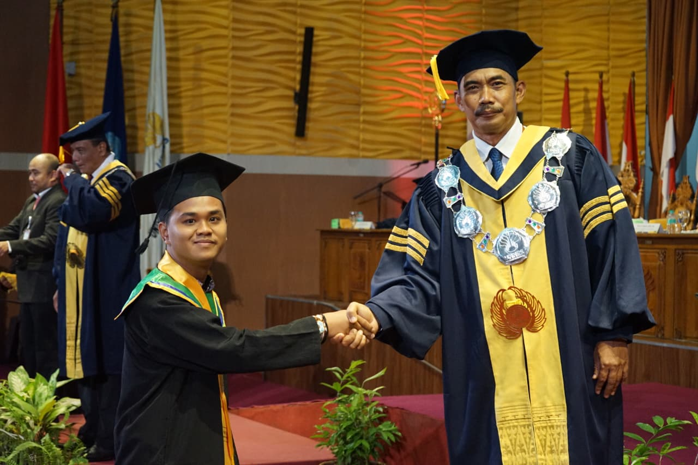

┃ Model Guru yang Dituju


Mewujudkan Sosok Pendidik PJOK yang Inovatif & Reflektif
Model guru yang saya tuju adalah sosok pendidik profesional yang tidak hanya menguasai materi gerak di lapangan, tetapi juga memiliki kompetensi pedagogi yang adaptif terhadap perkembangan zaman. Saya berkomitmen menjadi guru PJOK yang memposisikan diri sebagai fasilitator, motivator, dan teladan utama dalam membentuk karakter siswa.
Bagi saya, guru olahraga masa kini wajib mengintegrasikan nilai-nilai Joyful Learning (pembelajaran yang menyenangkan) agar pelajaran PJOK menjadi ruang yang inklusif—ramah untuk semua anak tanpa memandang tingkat kemampuan fisiknya. Guru yang dituju adalah ia yang konsisten melakukan refleksi demi melahirkan inovasi pembelajaran yang bermakna bagi peserta didik.